CoRL 2026Conference on Robot Learning
An Empirical Study of Data-Loading Bottlenecks (and Non-Bottlenecks) in Robotic Imitation Learning
TL;DR Faster data loaders don't shorten robot-policy training. Unindexed video seeking does lengthen it. We profiled end-to-end LeRobot training (ACT, SmolVLA) against a Rust data engine we built to be as fast as possible. The loader turned out not to be the bottleneck.
1–3.5%of each training step is spent waiting for data. Model compute takes the rest.
3.94×isolated loader speedup over torchcodec, but 324 s vs 326 s end to end, within noise.
5.6×slower training from PyAV's unindexed AV1 seeking: the one real bottleneck.

@inproceedings{jain2026dataloading,
title = {An Empirical Study of Data-Loading Bottlenecks
(and Non-Bottlenecks) in Robotic Imitation Learning},
author = {Jain, Mrinal and Gupta, Arpit and Garg, Animesh},
booktitle = {Conference on Robot Learning (CoRL)},
year = {2026},
url = {https://openreview.net/forum?id=Vv1WXMkSTD}
}